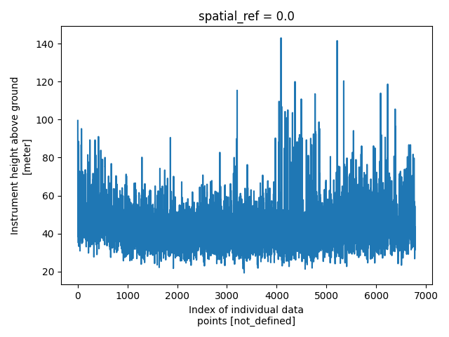

Note
Go to the end to download the full example code.
Magnetic Raster Dataset
These magnetic data channels were pulled from the Wisconsin SkyTEM example in this repository to demonstrate the relatively simple case of gridded raster files.
Dataset Reference: Minsley, B.J, Bloss, B.R., Hart, D.J., Fitzpatrick, W., Muldoon, M.A., Stewart, E.K., Hunt, R.J., James, S.R., Foks, N.L., and Komiskey, M.J., 2022, Airborne electromagnetic and magnetic survey data, northeast Wisconsin (ver. 1.1, June 2022): U.S. Geological Survey data release, https://doi.org/10.5066/P93SY9LI.
import matplotlib.pyplot as plt
from os.path import join
import numpy as np
import gspy
from gspy import Survey
import xarray as xr
from pprint import pprint
Convert the magnetic raster data to NetCDF
Initialize the Survey
# Path to example files
data_path = '..//data_files//magnetics'
# Survey metadata file
metadata = join(data_path, "WI_Magnetics_survey_md.yml")
# Establish the Survey
survey = Survey.from_dict(metadata)
data_container = survey.gs.add_container('data', **dict(content = "raw flightline and gridded magnetic data", comment = "grids were contractor-derived"))
1 - Raw Data - Import raw mag data from CSV-format. Define input data file and associated metadata file
d_data1 = join(data_path, 'WI_Magnetics.csv')
d_supp1 = join(data_path, 'WI_Magnetics_raw_data_md.yml')
# Add the raw AEM data as a tabular dataset
data_container.gs.add(key='raw_data', data_filename=d_data1, metadata_file=d_supp1)
1 - Gridded Data - Import a tif of gridded mag data. Define path to metadata file, which contains paths to the raster files
d_supp1 = join(data_path, 'WI_Magnetics_grids_md.yml')
# Add the mag grids as a raster dataset
data_container.gs.add(key='grids', metadata_file=d_supp1)
Save to NetCDF file
d_out = join(data_path, 'magnetics.nc')
survey.gs.to_netcdf(d_out)
Reading back in
new_survey = gspy.open_datatree(d_out)['survey']
print(new_survey)
<xarray.DataTree 'survey'>
Group: /survey
│ Dimensions: ()
│ Coordinates:
│ spatial_ref float64 8B ...
│ Data variables:
│ survey_information float64 8B ...
│ flightline_information float64 8B ...
│ survey_equipment float64 8B ...
│ Attributes:
│ type: survey
│ title: Magnetic data from SkyTEM Airborne Electromagnetic (AEM) Su...
│ institution: USGS Geology, Geophysics, and Geochemistry Science Center
│ source: SkyTEM raw data, USGS processed data
│ history: (1) Data acquisition 01/2021 - 02/2021 by SkyTEM Canada Inc...
│ references: Minsley, Burke J., B.R. Bloss, D.J. Hart, W. Fitzpatrick, M...
│ comment: This dataset includes minimally processed (raw) AEM and raw...
│ summary: Magnetic survey data were collected during January and Febr...
│ content: Data /survey; raw flightline and gridded magnetic data /sur...
│ created_by: gspy==2.0.0
│ conventions: CF-1.8, GS-2.0
└── Group: /survey/data
│ Dimensions: ()
│ Data variables:
│ spatial_ref float64 8B ...
│ Attributes:
│ content: raw flightline and gridded magnetic data
│ comment: grids were contractor-derived
│ type: container
├── Group: /survey/data/raw_data
│ │ Dimensions: (index: 6785)
│ │ Coordinates:
│ │ * index (index) int32 27kB 0 1 2 3 4 5 ... 6780 6781 6782 6783 6784
│ │ spatial_ref float64 8B ...
│ │ x (index) float64 54kB ...
│ │ y (index) float64 54kB ...
│ │ z (index) float64 54kB ...
│ │ Data variables: (12/17)
│ │ fid (index) float64 54kB ...
│ │ line (index) int64 54kB ...
│ │ lon (index) float64 54kB ...
│ │ lat (index) float64 54kB ...
│ │ alt (index) float64 54kB ...
│ │ height (index) float64 54kB ...
│ │ ... ...
│ │ mag_raw (index) float64 54kB ...
│ │ tmi (index) float64 54kB ...
│ │ rmf (index) float64 54kB ...
│ │ igrf (index) float64 54kB ...
│ │ inc (index) float64 54kB ...
│ │ dec (index) float64 54kB ...
│ │ Attributes:
│ │ content: raw data
│ │ comment: Contains flightline magnetic data
│ │ type: data
│ │ structure: tabular
│ │ mode: airborne
│ │ method: magnetic, total magnetic field
│ │ instrument: cesium vapour
│ └── Group: /survey/data/raw_data/magnetic_system
│ Dimensions: (n_transmitter: 1, n_receiver: 1,
│ n_couplet: 1, n_base_magnetometer: 1,
│ base_mag_locations: 2)
│ Coordinates:
│ * n_transmitter (n_transmitter) int64 8B 0
│ * n_receiver (n_receiver) int64 8B 0
│ * n_couplet (n_couplet) int64 8B 0
│ * n_base_magnetometer (n_base_magnetometer) int64 8B 0
│ * base_mag_locations (base_mag_locations) int64 16B 1 2
│ Data variables: (12/29)
│ transmitter_label (n_transmitter) <U7 28B ...
│ transmitter_description (n_transmitter) <U142 568B ...
│ receiver_label (n_receiver) <U19 76B ...
│ receiver_sensor_type (n_receiver) <U23 92B ...
│ receiver_sensor_model (n_receiver) <U6 24B ...
│ receiver_sensor_manufacturer (n_receiver) <U10 40B ...
│ ... ...
│ diurnal_correction <U110 440B ...
│ tieline_levelling <U33 132B ...
│ microlevelling <U31 124B ...
│ igrf_model_date <U21 84B ...
│ igrf_model_location <U54 216B ...
│ igrf_model_height <U69 276B ...
│ Attributes:
│ type: system
│ mode: airborne
│ method: magnetic
│ instrument: Geometrics G-822A cesium‑vapor magnetometer
│ name: magnetic_system
└── Group: /survey/data/grids
Dimensions: (x: 799, nv: 2, y: 1155)
Coordinates:
* x (x) float64 6kB 6.551e+05 6.552e+05 ... 7.348e+05 7.349e+05
* nv (nv) int64 16B 0 1
* y (y) float64 9kB 4.953e+05 4.952e+05 ... 3.8e+05 3.799e+05
spatial_ref float64 8B ...
Data variables:
x_bnds (x, nv) float64 13kB ...
y_bnds (y, nv) float64 18kB ...
magnetic_tmi (y, x) float64 7MB ...
magnetic_rmf (y, x) float64 7MB ...
Attributes:
content: gridded magnetic maps
comment: contractor-derived maps
type: data
structure: raster
mode: airborne
method: magnetic, total magnetic field
instrument: cesium vapour
property: magnetic
Plotting
plt.figure()
new_survey['data/raw_data']['height'].plot()
plt.tight_layout()
pd = new_survey['data/raw_data']['tmi']
plt.figure()
pd.plot()
plt.tight_layout()
m = new_survey['data/grids/magnetic_tmi']
plt.figure()
m.plot(cmap='jet')
plt.tight_layout()
plt.show()



Total running time of the script: (0 minutes 0.522 seconds)